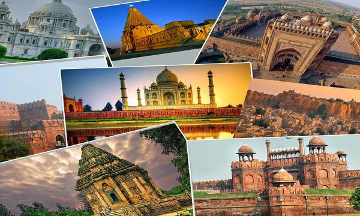

Embark on a journey through time and explore the rich tapestry of India's cultural heritage. Our guide will take you to the most iconic landmarks, from ancient temples to majestic forts, and unveil the stories behind these historical gems.

Discover Timeless Treasures
Embark on a virtual odyssey through the ages. Our historical gems, from ancient temples to majestic forts, narrate unique chapters in India's rich history. Let the echoes of the past guide you through the splendor of centuries-old stories.
India, a kaleidoscope of historical wonders, unveils a tapestry woven with the threads of time. The iconic Taj Mahal, an ethereal marble masterpiece, immortalizes a Mughal emperor's love for his queen. Ajanta and Ellora Caves, mystical rock-cut sanctuaries, unravel the artistic prowess of ancient civilizations through mesmerizing sculptures and murals. The Red Fort, an emblem of Mughal opulence, resonates with echoes of imperial grandeur. Varanasi's sacred ghats along the Ganges River epitomize spiritual sanctity, immersing visitors in ancient rituals. Hampi, a UNESCO World Heritage site, echoes the Vijayanagara Empire's grandeur through its captivating ruins. Rajasthan's Amber Fort and City Palace transport enthusiasts to regal eras of Rajput valor. These historic gems collectively narrate a fascinating tale, preserving India's cultural heritage and serving as time portals to epochs of glory, mysticism, and architectural brilliance. Each site is a chapter in India's chronicles, inviting exploration into its timeless treasures.
Architectural Marvels
Marvel at the intricate craftsmanship defining India's historical landmarks. From the grandeur of Mughal architecture to the intricate carvings of ancient temples, witness a fusion of styles that showcases India's unparalleled diversity in design and construction.
India, a treasure trove of architectural marvels, showcases a diverse range of styles spanning centuries. The Taj Mahal, a UNESCO World Heritage site, is an epitome of Mughal architecture, with its white marble elegance and intricate detailing. The ancient Ajanta and Ellora Caves feature rock-cut temples adorned with exquisite sculptures and paintings, reflecting the artistic mastery of bygone civilizations. Delhi's Qutub Minar, an imposing minaret, stands as a testament to Indo-Islamic design. The intricately carved temples of Khajuraho, a UNESCO site, celebrate human sensuality and spirituality in stunning symmetry. Rajasthan's Jaipur, the Pink City, boasts architectural gems like Hawa Mahal and City Palace, showcasing Rajput magnificence. These wonders, ranging from ancient caves to regal palaces, collectively narrate India's architectural journey, captivating visitors with a rich tapestry of artistic innovation and cultural heritage.
Cultural Significance
Delve into the cultural significance of each site, where rituals, traditions, and legends have shaped India's identity. These landmarks play a pivotal role in the nation's collective consciousness, carrying the spirit of India through the ages.India's architectural marvels transcend aesthetics; they embody profound cultural significance, reflecting the nation's diverse heritage. The Taj Mahal, a symbol of eternal love, stands as a testament to Mughal culture and craftsmanship. Ajanta and Ellora Caves serve as canvases illustrating ancient religious and artistic practices, encapsulating the spiritual essence of Indian society. The Qutub Minar, a towering Islamic structure, narrates the story of Delhi's historical evolution. Khajuraho's temples, adorned with intricate carvings, celebrate the fusion of sensuality and spirituality in Hindu culture. Rajasthan's palaces in Jaipur showcase the opulence and valor of the Rajput dynasty.
Explore the Taj Mahal, a masterpiece in Agra, India, built in 1632 by Emperor Shah Jahan. This iconic white marble mausoleum stands as a testament to eternal love and is a UNESCO World Heritage Site.
RedFort
Step into history at the Red Fort in Delhi, India, founded in 1639 by Emperor Shah Jahan. This UNESCO World Heritage Site with its red sandstone walls and marble palaces tells tales of Mughal grandeur.
Ajanta Caves
Discover the Ajanta Caves near Aurangabad, India, a treasure trove of ancient murals. Carved into rock surfaces, these caves showcase exquisite paintings and sculptures, providing a glimpse into India's rich artistic heritage.
Marvel at the Gateway of India, an iconic arch monument in Mumbai, built in 1914. Standing tall on the waterfront, it commemorates the visit of King George V and Queen Mary and symbolizes the grandeur of Mumbai.
Explore Qutb-Minar, India's tallest tower built in AD 1199 in Delhi. Its red and buff sandstone beauty reflects the rich history and architectural prowess of the Delhi Sultanate.
Join Us on a Journey Through Time
Step into a world where the past comes alive, and history resonates through enduring wonders. "Historical Places in India" invites you on an unforgettable exploration, where each landmark stands as a testament to the enduring spirit of India's rich heritage.
Embark on an enchanting journey through time as we explore the cultural kaleidoscope of India's historical treasures.